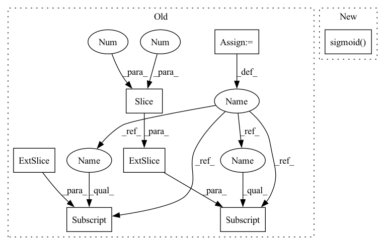

Pattern ID :17511

Before Change
n = b.shape[0] // number of targets
if n:
ps = pi[b, a, gj, gi] // prediction subset corresponding to targets
// Regression
pxy = ps[:, :2].sigmoid() * 2. - 0.5
pwh = (ps[:, 2:4].sigmoid() * 2) ** 2 * anchors[i]
pbox = torch.cat((pxy, pwh), 1) // predicted box
iou = bbox_iou(pbox.T, tbox[i], x1y1x2y2=False, CIoU=True) // iou(prediction, target)
if self.g2>0 :// Focal-EIOU https://arxiv.org/abs/2101.08158
lbox += ((bbox_iou(pbox.T, tbox[i], x1y1x2y2=False)** g2)*(1 - iou)).mean()
else:
lbox += (1.0 - iou).mean() // iou loss
// Objectness
score_iou = iou.detach().clamp(0).type(tobj.dtype)
if self.sort_obj_iou:
sort_id = torch.argsort(score_iou)
b, a, gj, gi, score_iou = b[sort_id], a[sort_id], gj[sort_id], gi[sort_id], score_iou[sort_id]
tobj[b, a, gj, gi] = (1.0 - self.gr) + self.gr * score_iou // iou ratio
// Classification
if self.nc > 1: // cls loss (only if multiple classes)
t = torch.full_like(ps[:, 5:], self.cn, device=device) // targets
t[range(n), tcls[i]] = self.cp
lcls += self.BCEcls(ps[:, 5:], t) // BCE
// Append targets to text file
// with open("targets.txt", "a") as file:
After Change
pxy, pwh, _, pcls = pi[b, a, gj, gi].tensor_split((2, 4, 5), dim=1) // target-subset of predictions
// Regression
pxy = pxy.sigmoid() * 2 - 0.5
pwh = (pwh.sigmoid() * 2) ** 2 * anchors[i]
pbox = torch.cat((pxy, pwh), 1) // predicted box
iou = bbox_iou(pbox.T, tbox[i], x1y1x2y2=False, CIoU=True) // iou(prediction, target)
In pattern: SUPERPATTERN
Frequency: 3
Non-data size: 7
Instances
Fragment ID: 58003069
Project Name: positive666/yolov5_research
Commit Name: 2005e73bf52d6235acbdbe1b08773d423ab31118
Time: 2022-03-20
Author: 286040359@qq.com
File Name: utils/loss.py
M Class Name: ComputeLoss
N Class Name: ComputeLoss
M Method Name: __call__(3)
N Method Name: __call__(3)
M Parent Class:
N Parent Class:
M File Name: utils/loss.py
N File Name: utils/loss.py
M Start Line: 119
M End Line: 153
N Start Line: 120
N End Line: 155
'>
Before Change
if self.dynamic or self.grid[i].shape[2:4] != x[i].shape[2:4]:
self.grid[i], self.anchor_grid[i] = self._make_grid(nx, ny, i)
y = x[i].clone()
y[..., :5 + self.nc].sigmoid_()
if self.inplace:
y[..., 0:2] = (y[..., 0:2] * 2 + self.grid[i]) * self.stride[i] // xy
y[..., 2:4] = (y[..., 2:4] * 2) ** 2 * self.anchor_grid[i] // wh
else: // for YOLOv5 on AWS Inferentia https://github.com/ultralytics/yolov5/pull/2953
xy, wh, etc = y.split((2, 2, self.no - 4), 4) // tensor_split((2, 4, 5), 4) if torch 1.8.0
After Change
xy, wh, conf, mask = x[i].split((2, 2, self.nc + 1, self.no - self.nc - 5), 4)
xy = (xy.sigmoid() * 2 + self.grid[i]) * self.stride[i] // xy
wh = (wh.sigmoid() * 2) ** 2 * self.anchor_grid[i] // wh
y = torch.cat((xy, wh, conf.sigmoid(), mask), 4)
else: // Detect (boxes only)
xy, wh, conf = x[i].sigmoid().split((2, 2, self.nc + 1), 4)
xy = (xy * 2 + self.grid[i]) * self.stride[i] // xy
'>
Fragment ID: 58003093
Project Name: ultralytics/yolov5
Commit Name: 060837406542c5c65301b8fde641f4d92a1f395e
Time: 2022-09-17
Author: glenn.jocher@ultralytics.com
File Name: models/yolo.py
M Class Name: Detect
N Class Name: Detect
M Method Name: forward(2)
N Method Name: forward(2)
M Parent Class: nn.Module
N Parent Class: nn.Module
M File Name: models/yolo.py
N File Name: models/yolo.py
M Start Line: 61
M End Line: 77
N Start Line: 58
N End Line: 77
'>
Before Change
n = b.shape[0] // number of targets
if n:
ps = pi[b, a, gj, gi] // prediction subset corresponding to targets
// Regression
pxy = ps[:, :2].sigmoid() * 2. - 0.5
pwh = (ps[:, 2:4].sigmoid() * 2) ** 2 * anchors[i]
pbox = torch.cat((pxy, pwh), 1) // predicted box
iou = bbox_iou(pbox.T, tbox[i], x1y1x2y2=False, CIoU=True) // iou(prediction, target)
if self.g2>0 :// Focal-EIOU https://arxiv.org/abs/2101.08158
After Change
pxy, pwh, _, pcls = pi[b, a, gj, gi].tensor_split((2, 4, 5), dim=1) // target-subset of predictions
// Regression
pxy = pxy.sigmoid() * 2 - 0.5
pwh = (pwh.sigmoid() * 2) ** 2 * anchors[i]
pbox = torch.cat((pxy, pwh), 1) // predicted box
iou = bbox_iou(pbox.T, tbox[i], x1y1x2y2=False, CIoU=True) // iou(prediction, target)
'>
Fragment ID: 58003068
Project Name: positive666/yolov5_research
Commit Name: 2005e73bf52d6235acbdbe1b08773d423ab31118
Time: 2022-03-20
Author: 286040359@qq.com
File Name: utils/loss.py
M Class Name: ComputeLoss
N Class Name: ComputeLoss
M Method Name: __call__(3)
N Method Name: __call__(3)
M Parent Class:
N Parent Class:
M File Name: utils/loss.py
N File Name: utils/loss.py
M Start Line: 119
M End Line: 153
N Start Line: 120
N End Line: 155
'>
Before Change
n = b.shape[0] // number of targets
if n:
ps = pi[b, a, gj, gi] // prediction subset corresponding to targets
// Regression
pxy = ps[:, :2].sigmoid() * 2 - 0.5
pwh = (ps[:, 2:4].sigmoid() * 2) ** 2 * anchors[i]
pbox = torch.cat((pxy, pwh), 1) // predicted box
iou = bbox_iou(pbox.T, tbox[i], x1y1x2y2=False, CIoU=True) // iou(prediction, target)
lbox += (1.0 - iou).mean() // iou loss
After Change
// Regression
pxy = pxy.sigmoid() * 2 - 0.5
pwh = (pwh.sigmoid() * 2) ** 2 * anchors[i]
pbox = torch.cat((pxy, pwh), 1) // predicted box
iou = bbox_iou(pbox.T, tbox[i], x1y1x2y2=False, CIoU=True) // iou(prediction, target)
lbox += (1.0 - iou).mean() // iou loss
'>
Fragment ID: 58003071
Project Name: ultralytics/yolov5
Commit Name: b0ba101ac0aa898a4e4b867d377e140af8d4258a
Time: 2022-03-19
Author: glenn.jocher@ultralytics.com
File Name: utils/loss.py
M Class Name: ComputeLoss
N Class Name: ComputeLoss
M Method Name: __call__(3)
N Method Name: __call__(3)
M Parent Class:
N Parent Class:
M File Name: utils/loss.py
N File Name: utils/loss.py
M Start Line: 118
M End Line: 149
N Start Line: 120
N End Line: 152